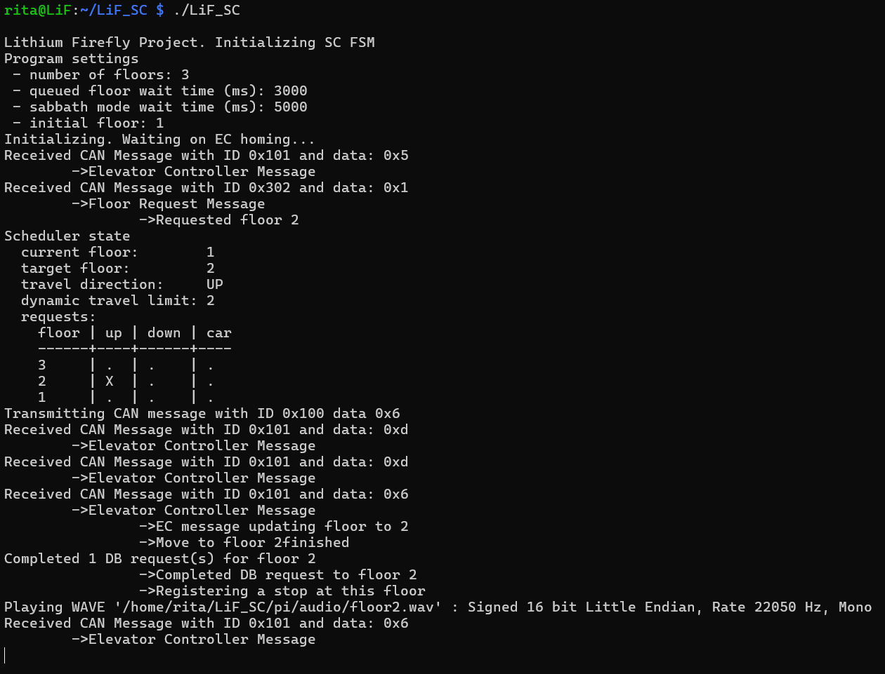
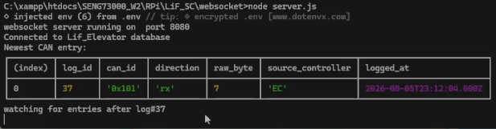
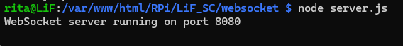

Elevator Controller Remote Control
I connected a USB cable between the Supervisory Controller (SC) and Elevator Controller (EC), allowing the EC's UART interface to be accessed through the Raspberry Pi running the SC. I used the following command to open a serial monitor connected to the EC:
minicom --device=/dev/ttyACM0 --baudrate=112500This connection allowed remote coil control through the SC.
Cleaning Up Diagnostic Output
I formatted the main diagnostic output to improve its readability, particularly the CAN receive messages. I also changed the scheduler table so that it is drawn from top to bottom instead of from bottom to top.

Virtual-Door Support
I added support for virtual door-open and door-close commands to the SC and Car Controller (CC). To
implement this feature, I created a new door module that refactored the rushed door-related
functions previously placed in main for the Phase 2 demonstration. The module accepts state
updates from either the CAN bus or database and switches between virtual-door and physical-door control
when the inactive mode's state is toggled.
The feature also required an initialization step that checks the physical door state. The controller can proceed once the database and CAN door states have both been established.
I modified the CC code to implement the following functionality:
- The button LEDs flash with a 500 ms on/off interval to indicate that the virtual door is open. The physical-door-open LED is hardwired and cannot be controlled by the CC.
- The CC supports CAN message
0x201, which was added in LiF CAN protocol version 1.1. - The SC can use message
0x201to request the physical door state or optionally command the CC to open or close the virtual door. - The CC now includes the required virtual-door state logic.
The Door State Update message with ID 0x201 uses the following bit assignments:
- Bit 0: Indicates whether the virtual door is open.
- Bit 1: Commands the CC to update the virtual-door state.
- Bit 2: Requests a reply containing the physical door state.
These changes were implemented but still required testing.
Testing Nick's WebSockets
Because Nick was not in the laboratory today, I tested his WebSocket code for updating the elevator sprite's position on the website without refreshing the page. I pulled his SC changes, which added Node.js WebSockets, and installed the required dependencies:
sudo apt-get install npm # Install the npm package manager
npm install ws mysql2 dotenv # Install the WebSocket dependenciesWhen I initially ran Nick's server.js on the Raspberry Pi, I did not receive the output he
had described.


One issue was the missing .env file. The file had automatically been added to
.gitignore and therefore was not pushed to the branch. I created it with the following
contents:
DB_HOST=127.0.0.1
DB_PORT=3306
DB_USER=LiF_Admin
DB_PASSWORD=LiF_ESE
DB_NAME=lif_elevator
WS_PORT=8080After messaging Nick while troubleshooting, I used nano to inspect server.js
and discovered that his latest changes had not been pushed to Git. Once he pushed the changes, I pulled
them and successfully started the WebSocket system.
The door state still did not update without a page refresh, but Nick confirmed that this was the expected behaviour at this stage of development.